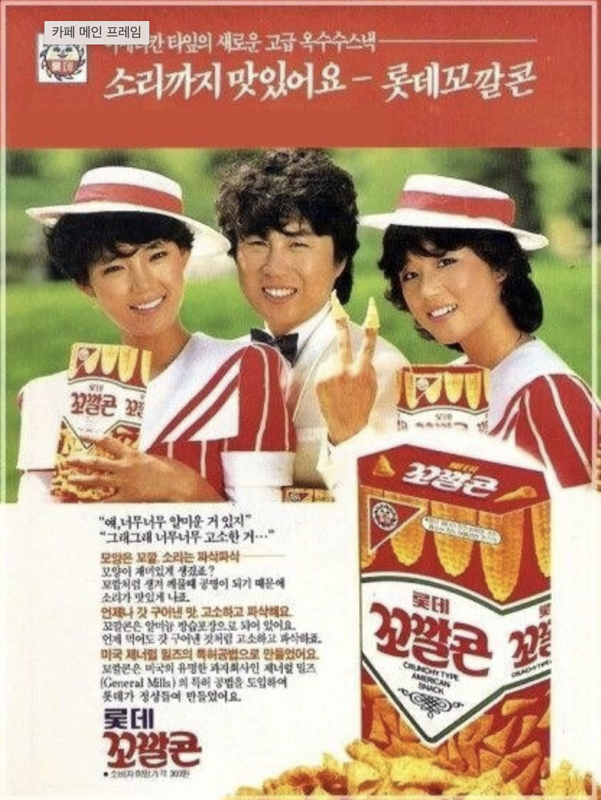

남진
얘, 너무너무 알미운 거 있지
그래그래 너무 고소한 거...

얘, 너무너무 알미운 거 있지
그래그래 너무 고소한 거...
남진은 대한민국을 대표하는 가수로, 1960년대부터 1980년대까지 큰 인기를 누린 대중문화의 아이콘이다. 굵고 중후한 저음의 목소리와 세련된 무대 매너로 사랑받았으며, 트로트뿐만 아니라 팝과 로큰롤 스타일의 음악까지 폭넓게 소화하며 독보적인 존재감을 보여주었다.
꼬깔콘은 롯데제과가 출시한 스낵으로, 독특한 원뿔 모양과 고소한 맛으로 소비자들에게 큰 사랑을 받았다. 손가락에 끼워 먹는 재미와 바삭한 식감으로 어린이와 청소년층 사이에서 특히 인기를 끌며 장수 스낵 브랜드로 자리 잡았다.
남진이 출연한 꼬깔콘 광고는 제품의 고소한 맛을 친근하고 유쾌하게 표현했다. 당시 최고의 인기를 누리던 스타였던 남진의 대중적인 이미지가 제품과 잘 어우러져 소비자들의 관심을 끌었으며, 꼬깔콘의 인지도 향상에 큰 역할을 했다.
1980년대는 텔레비전 광고가 소비자들에게 가장 강력한 영향력을 행사하던 시기였다. 기업들은 인기 가수와 배우를 광고 모델로 적극 기용하며 제품 이미지를 강화했고, 남진 역시 당시 높은 인지도와 대중성을 바탕으로 다양한 광고에 출연하며 브랜드의 신뢰도를 높이는 역할을 했다.